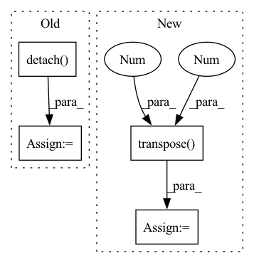

Pattern ID :82

Before Change
train_bs, class_num = g_t.size(0), g_t.size(1)
g_t_temp = g_t / self.temperature
g_t_temp_softmax = nn.Softmax(dim=1)(g_t_temp)
target_entropy_weight = entropy(g_t_temp_softmax).detach()
target_entropy_weight = 1 + torch.exp(-target_entropy_weight)
target_entropy_weight = train_bs * target_entropy_weight / torch.sum(target_entropy_weight)
c_matrix = g_t_temp_softmax.mul(target_entropy_weight.view(-1,1)).transpose(1,0).mm(g_t_temp_softmax)
c_matrix = c_matrix / torch.sum(c_matrix, dim=1)
mcc_loss = (torch.sum(c_matrix) - torch.trace(c_matrix)) / class_num
return mcc_loss
After Change
entropy_weight = entropy(predictions).detach()
entropy_weight = 1 + torch.exp(-entropy_weight)
entropy_weight = (batch_size * entropy_weight / torch.sum(entropy_weight)).unsqueeze(dim=1) // batch_size x 1
class_confusion_matrix = torch.mm((predictions * entropy_weight).transpose(1, 0), predictions)
class_confusion_matrix = class_confusion_matrix / torch.sum(class_confusion_matrix, dim=1)
mcc_loss = (torch.sum(class_confusion_matrix) - torch.trace(class_confusion_matrix)) / num_classes
return mcc_loss
In pattern: SUPERPATTERN
Frequency: 3
Non-data size: 4
Instances
Fragment ID: 1032781
Project Name: thuml/transfer-learning-library
Commit Name: 7f63cd30ea0e7cf8961db90d2af8630e2429b434
Time: 2020-08-28
Author: 13126830206@163.com
File Name: dalib/adaptation/mcc.py
M Class Name: MinimumClassConfusionLoss
N Class Name: MinimumClassConfusionLoss
M Method Name: forward(2)
N Method Name: forward(2)
M Parent Class: nn.Module
N Parent Class: nn.Module
M File Name: dalib/adaptation/mcc.py
N File Name: dalib/adaptation/mcc.py
M Start Line: 17
M End Line: 23
N Start Line: 41
N End Line: 46
'>
Before Change
duration_masks = make_pad_mask(text_lens, device=text_lens.device)
if self.stop_gradient_from_pitch_predictor:
pitch_predictions = self.pitch_predictor(encoded_texts.detach(), duration_masks.unsqueeze(-1))
else:
pitch_predictions = self.pitch_predictor(encoded_texts, duration_masks.unsqueeze(-1))
After Change
duration_z = self.duration_vae(cond=encoded_texts.transpose(1, 2),
infer=True)
pitch_predictions = self.pitch_vae.decoder(pitch_z,
nonpadding=None,
cond=encoded_texts.transpose(1, 2).detach(),
utt_emb=utterance_embedding).transpose(1, 2)
energy_predictions = self.energy_vae.decoder(energy_z,
nonpadding=None,
cond=encoded_texts.transpose(1, 2).detach(),
utt_emb=utterance_embedding).transpose(1, 2)
'>
Fragment ID: 1032715
Project Name: digitalphonetics/ims-toucan
Commit Name: b94d11dc36ef0e5795446826678e202ad390f50b
Time: 2023-01-10
Author: lux.florian@gmail.com
File Name: InferenceInterfaces/InferenceArchitectures/InferencePortaSpeech.py
M Class Name: PortaSpeech
N Class Name: PortaSpeech
M Method Name: _forward(13)
N Method Name: _forward(13)
M Parent Class: torch.nn.Module
N Parent Class: torch.nn.Module
M File Name: InferenceInterfaces/InferenceArchitectures/InferencePortaSpeech.py
N File Name: InferenceInterfaces/InferenceArchitectures/InferencePortaSpeech.py
M Start Line: 185
M End Line: 231
N Start Line: 228
N End Line: 283
'>
Before Change
pc_feats = self._extract_part_feats(part_pcs, part_valids)
// prepare seq2seq input
pc_feats_seq = pc_feats.transpose(0, 1).contiguous() // [P, B, C]
target_seq = pc_feats_seq.detach()
output_seq, _ = self.seq2seq(pc_feats_seq, target_seq)
output_seq = output_seq.squeeze(2).transpose(0, 1) // [B, P, C"]
// MLP predict poses
inst_label = inst_label.type_as(pc_feats)
After Change
part_feats = self._extract_part_feats(part_pcs, part_valids)
// prepare seq2seq input
part_feats_seq = part_feats.transpose(0, 1).contiguous() // [P, B, C]
target_seq = part_feats_seq.detach()
output_seq, _ = self.seq2seq(part_feats_seq, target_seq)
output_seq = output_seq.squeeze(2).transpose(0, 1) // [B, P, C"]
'>
Fragment ID: 1032672
Project Name: wuziyi616/multi_part_assembly
Commit Name: 32e79bcfcdfb8532fbd8f953fc58330b89132be2
Time: 2022-03-27
Author: dazitu616@gmail.com
File Name: multi_part_assembly/models/b_lstm/network.py
M Class Name: LSTMModel
N Class Name: LSTMModel
M Method Name: forward(2)
N Method Name: forward(2)
M Parent Class: BaseModel
N Parent Class: BaseModel
M File Name: multi_part_assembly/models/b_lstm/network.py
N File Name: multi_part_assembly/models/b_lstm/network.py
M Start Line: 78
M End Line: 99
N Start Line: 78
N End Line: 99